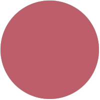
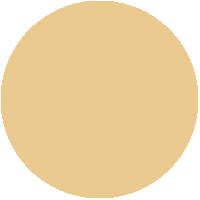
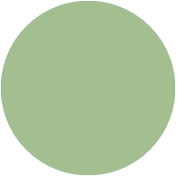

corps career
I am also a member of the Texas A&M Corps of Cadets, and Squadron 17. Along with reciving the distinguished student medal for academic acheivment, I have been selected to serve as the company guidon for the 2020 2021 school year. This is an incredible honor that identifies me as one of the top performing cadets of my class.

projects
This website was written from scratch using HTML5 and CSS. Click on the dot above to findout more.
contact me
Below you can find my email, social links, and a copy of my resume.